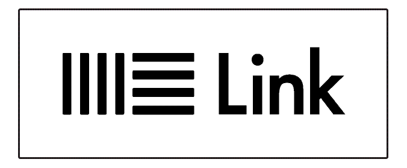
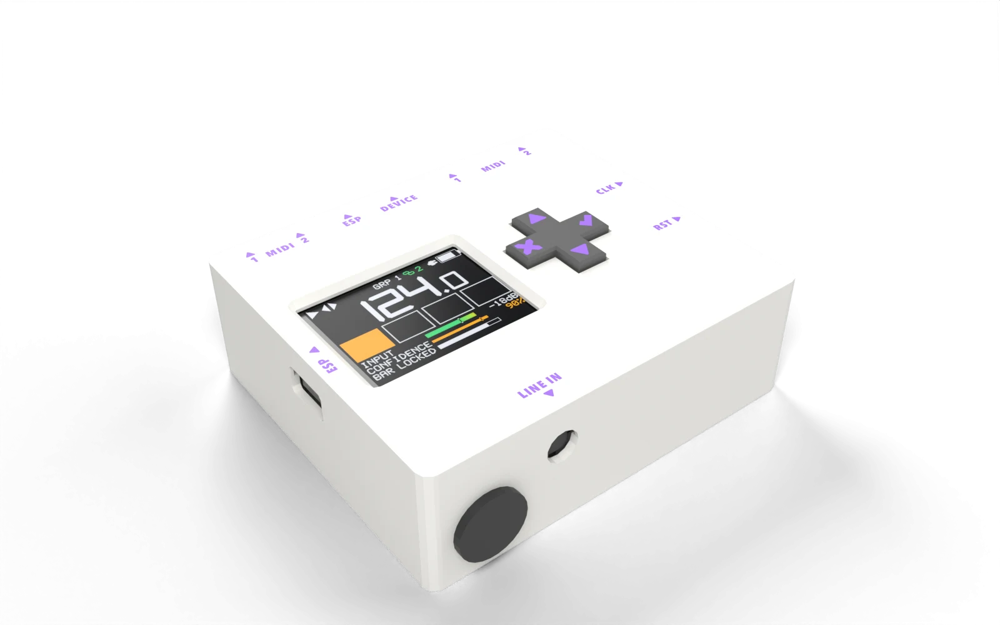
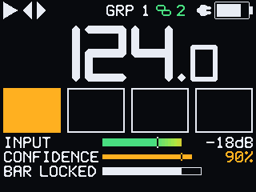

Ableton Link with no router

Jank brings computers, MIDI gear and modular gear into one Link session. The units send open Wi-Fi frames straight to each other on the group's channel: no router, no association, no password, no host. Units set to the same GROUP (1..9) hear each other.
It is the group mode of Optimist, the open firmware for the FM-1 synth. FM-1s running Optimist do this by themselves; the Jank device speaks the same air format, so whatever is plugged into it joins the group too. The air format: docs/air.md. Link is Ableton's trademark; Jank is not an Ableton product.

Sync together
- A computer, over the network. The computer sees a USB network adapter on the device, it can join Jank groups: Live, Bitwig or any Link app joins the Jank session. Best part: the computer bridges and syncs a Jank group with a standard Link group it joins too.
- A computer or a USB device, and MIDI gear via TRS or DIN, connect via MIDI clock. USB-MIDI device for a computer, USB-MIDI host for gear with a USB port.
- Modular gear. Clock outputs, 5 V pulses.
Beat follow
Play music into it and Jank follows the beat: the tempo, the beat grid, start and stop go into the Link session, so the whole group plays along with the track. When the music stops, the session stops; when it starts again, the session starts on the next bar.
The music comes in as USB audio (the computer sees a sound output called Jank) or, on the jank mini 3, through the LINE IN jack. A plug in LINE IN takes over from USB.

The network it runs today is madmom's beat model, for non-commercial use: the firmware does not carry it, and the Install page adds it to your device at your click. Our own network will replace it. Details: docs/beat.md, docs/linein.md.
Two devices
- The jank mini 3: Jank on a Waveshare ESP32-S3-LCD-2 with its colour screen, on our board in a printed box: 2 MIDI outs (TRS + DIN each), clock and reset outs for modular gear, a line in, a USB port for gear, a D-pad and a battery.
- The bare device: the same firmware on a Seeed XIAO ESP32-S3, in a computer or any USB host that speaks MIDI clock or Link. One button, one LED.

Put the firmware on a device: Install. Run and watch one: Device.